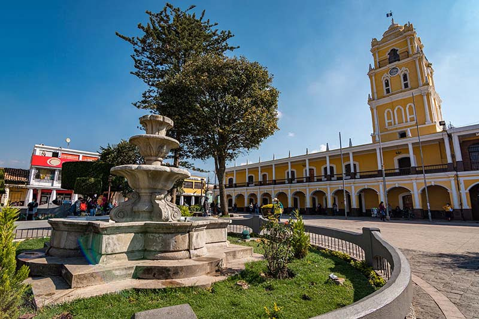

Departamento de Huehuetenango
Huehuetenango
La ciudad de Huehuetenango fue fundada por Gonzalo de Alvarado en 1524 al finalizar la conquista de la antigua capital precolombina de los mames: Zaculeu que significa Tierra Blanca. Mucha gente descendiente de los mames, aún vive en los municipios aledaños al Municipio de Huehuetenango y las ruinas del antiguo centro ceremonial de Zaculeu constituyen una atracción turística ubicada a cuatro kilómetros del parque Central de la ciudad. Huehuetenango es uno de los departamentos donde más idiomas se hablan en Guatemala. Además del español, también se habla el mam, tectiteco, aguacateco, chuj, popti’ y kanjobal, entre otros.
Ubicación:
La ciudad de Huehuetenango se encuentra a una distancia de aproximadamente 264 km de la ciudad capital de Guatemala.
Conoce estos lugares que te recomendamos en tu visista a Huehuetenango:
Cenote de Candelaria
Se trata de dos pozas de agua cristalina conectadas por una serie de ríos subterráneos, un destino simplemente impresionante. En este lugar puedes descubrir la naturaleza como nunca antes, el agua es trasparente y hermosa.
Ruinas de Zaculeu
Considerada como la ciudad más importante del señor mam, Zaculeu, contiene un enorme complejo de templos y campos que eran utilizados por los mayas para el juego de pelota. Zaculeu fue la capital del reino mam y tuvo auge durante el Período Clásico.

El Cimarrón
Este es un cenote vacío, ya que no contiene agua, pero sí hay árboles de 25 a 30 metros de altura. Entre la flora de los bosques se encuentran especies de encinos, pinos, copales y nances.
Mirador Juan Diéguez Olaverri
Situado a 12 kilómetros de ascenso hacia Todos Santos Cuchumatán, el Mirador Juan Diéguez Olaverri es de los sitios más populares de Huehuetenango debido a que en él se puede apreciar una vista maravillosa de nubes, volcanes y mucha naturaleza pintoresca.
Laguna Magdalena
es un lugar hermoso y muy tranquilo, justo para escuchar la naturaleza. Esta laguna es un verdadero paraíso, ya que el agua va cambiando de color dependiendo del sol y de la posición en la que se encuentra.
❮ ❯